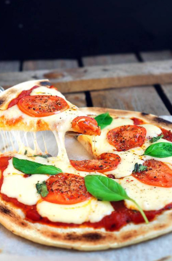

🍕 Пицца Маргаритини
📋 Ингредиенты
- Тесто для пиццы (дрожжевое) — 250 г
- Моцарелла — 100 г
- Базилик свежий — 6–8 листиков
- Томатный соус (с травами) — 3–4 ст. л.
- Помидор — 1 крупный
- Оливковое масло — для смазывания
- Соль, перец — по вкусу
👩🍳 Приготовление
- Подготовьте начинку. Помидоры нарежьте тонкими кольцами (чтобы успели пропечься за 3–4 минуты). Моцареллу нарежьте толстыми брусками толщиной около 1 см — такой сыр плавится медленно и не успеет превратиться в лужицу.
- Раскатайте тесто. Подпылите стол мукой. Раскатывайте шар в разные стороны, переворачивая, чтобы форма получилась круглой. Толщина — не более 3 мм. Можно вырезать круг с помощью тарелки. Переложите тесто на пергамент.
- Смажьте основу. Ложкой выложите томатный соус в центр и размажьте, отступая от краёв (если хотите бортик — заверните края). Соус можно взять с травами, чесноком, перцем.
- Выложите сыр и начинку. Разбросайте половину кусочков моцареллы по соусу — это скрепит начинку с коржом. Сверху — половину листиков базилика, кольца помидоров. Затем оставшийся сыр. Приправьте перцем и солью.
- Разогрейте духовку до максимума (250–280 °C). Противень разогрейте в духовке 10 минут.
- Выпекайте. Переложите пиццу вместе с пергаментом на горячий противень. Выпекайте на нижней полке 3–6 минут. Признак готовности: корж подрумянился, сыр начал плавиться, но ещё не растёкся полностью.
- Подача. Дайте пицце постоять 1 минуту. Разрежьте специальным ножом для пиццы (он режет аккуратнее круглых ножей). Посыпьте оставшимся свежим базиликом. Приятного аппетита, котики! 🍷
Минимализм, свежесть и итальянская душа — вот рецепт идеальной Маргариты в нашем исполнении! 🇮🇹
